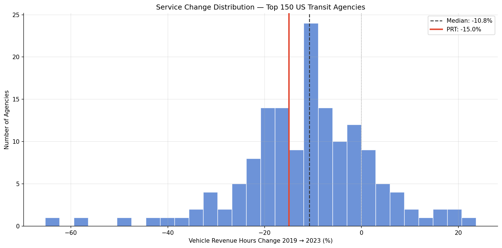
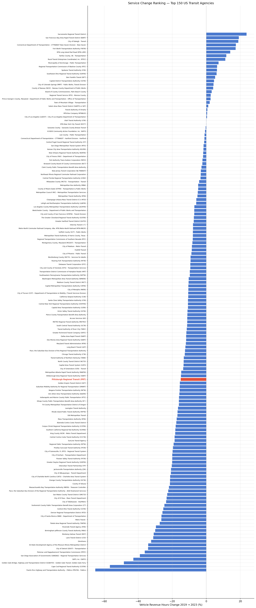
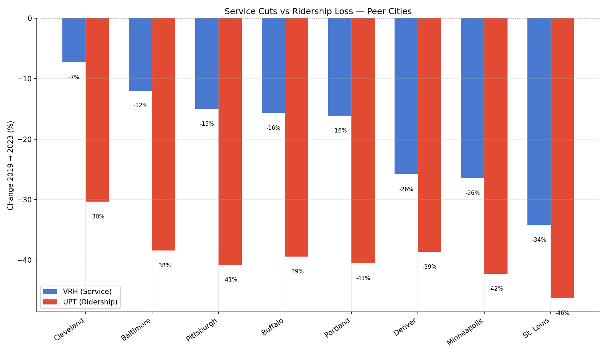
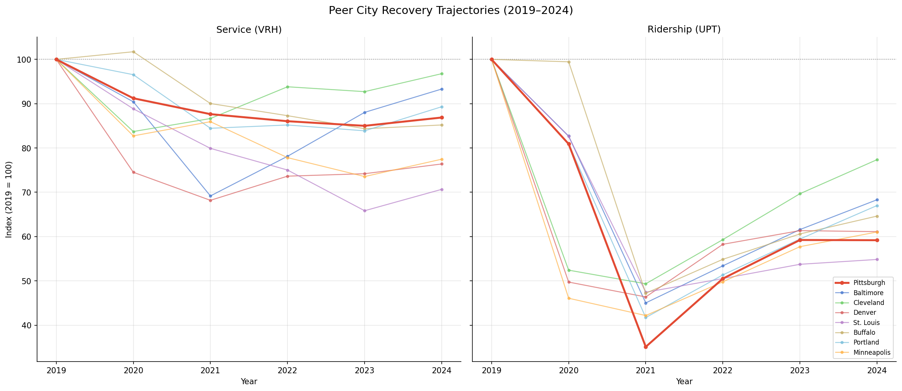
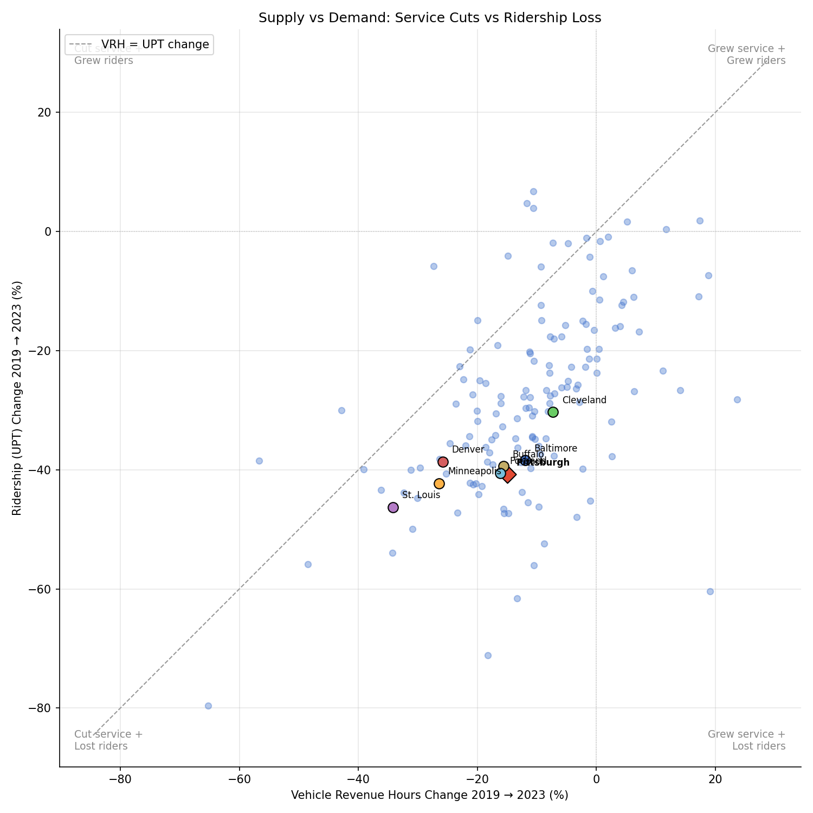

Analysis
39 — National Service Cuts (2019 vs 2024)
Equity and Strategic Planning
Coverage: Coverage window unavailable for this page.
Built 2026-06-05 17:58 UTC · Commit 7493239
Page Navigation
Analysis Navigation
Data Provenance
flowchart LR
39_national_service_cuts(["39 — National Service Cuts (2019 vs 2024)"])
t_ntd_annual_service[("ntd_annual_service")] --> 39_national_service_cuts
06_ntd_service[["NTD Annual Service ETL"]] --> t_ntd_annual_service
u1_06_ntd_service[/"data/ntd-annual-service/2023_TS2.2_Service_Data.xlsx"/] --> 06_ntd_service
d1_39_national_service_cuts(("polars (lib)")) --> 39_national_service_cuts
d2_39_national_service_cuts(("matplotlib (lib)")) --> 39_national_service_cuts
classDef page fill:#dbeafe,stroke:#1d4ed8,color:#1e3a8a,stroke-width:2px;
classDef table fill:#ecfeff,stroke:#0e7490,color:#164e63;
classDef dep fill:#fff7ed,stroke:#c2410c,color:#7c2d12,stroke-dasharray: 4 2;
classDef file fill:#eef2ff,stroke:#6366f1,color:#3730a3;
classDef api fill:#f0fdf4,stroke:#16a34a,color:#14532d;
classDef pipeline fill:#f5f3ff,stroke:#7c3aed,color:#4c1d95;
class 39_national_service_cuts page;
class t_ntd_annual_service table;
class d1_39_national_service_cuts,d2_39_national_service_cuts dep;
class u1_06_ntd_service file;
class 06_ntd_service pipeline;
Findings
Findings: National Service Cuts (2019 vs 2024)
Summary
PRT cut 13.1% of vehicle revenue hours between 2019 and 2024, ranking 104th of 150 large US transit agencies (worse than the -6.8% median). However, PRT's ridership dropped 40.8% over the same period — a 27.7 pp gap that strongly suggests the ridership decline is primarily a demand-side problem, not a consequence of service cuts.
Key Numbers
- PRT VRH change: -13.1% (2,382,972 → 2,070,196 hours)
- PRT UPT change: -40.8% (64.0M → 37.9M trips)
- PRT VRH rank: 104th of 150 (1st = best recovery)
- National median VRH change: -6.8%
- Agencies recovered to 2019 VRH: 48 of 150 (32%)
- Supply–demand gap: 130 of 150 agencies lost more riders than service (below the y=x diagonal)
Observations
- PRT's ridership problem is demand-driven. PRT cut 13% of service hours but lost 41% of riders. The 28 pp gap means roughly two-thirds of the ridership loss occurred independently of service reductions. This pattern holds across virtually all peers and nationally.
- PRT is mid-pack on service cuts among peers. Cleveland cut the least (-3.2%), while St. Louis cut the most (-29.3%). PRT sits between Portland (-10.7%) and Buffalo (-14.8%).
- Denver and Minneapolis cut service aggressively. Both cut 23–24% of VRH, among the steepest cuts in the peer group, but their ridership losses (-39%) were proportionally smaller relative to the service reductions compared to East Coast peers.
- Supply–demand gaps vary significantly. Cleveland maintained 97% of service but lost 23% of riders (19 pp gap). Baltimore cut 7% but lost 32% (25 pp gap). The gap ranges from 15 pp (Denver) to 28 pp (Pittsburgh) among peers.
- Service recovery is slow but ongoing. By 2024, 48 of 150 agencies (32%) had recovered to 2019 VRH levels, up from 26 (17%) at the 2023 mark. The median cut narrowed from -10.8% to -6.8%, indicating gradual national service restoration.
- Service growth does not guarantee ridership recovery. Of the 48 agencies that grew VRH, many still have not recovered ridership. Sacramento grew VRH by 29% but still lost riders.
- Trajectory charts reveal distinct recovery shapes. Cleveland's VRH barely dipped and recovered quickly (V-shape), while St. Louis and Denver show L-shaped stagnation at ~70–75% of 2019 levels. PRT's service trajectory shows a gradual decline through 2023 followed by a modest uptick in 2024 — not the sharp COVID-era drop-and-bounce seen in some peers. Ridership trajectories are uniformly worse: all peers collapsed to 40–60% of baseline in 2020 and have only partially recovered, with Pittsburgh among the slowest to rebound.
Discussion
The dominant national pattern is that transit agencies lost far more riders than they cut service. This suggests the post-COVID ridership shortfall is primarily driven by changed travel patterns (remote work, shifted commuting) rather than by service austerity. PRT fits this pattern: even if all 2019 service hours were restored tomorrow, the data suggests ridership would remain well below 2019 levels.
That said, service cuts and ridership loss are not fully independent. Reduced frequency makes transit less attractive, creating a feedback loop: cut service → longer waits → some riders leave → further cuts seem justified. The 13% VRH reduction likely contributed some portion of the 41% ridership loss, but the cross-agency evidence shows the demand shift is the larger driver.
Among peers, the agencies with the smallest service cuts (Cleveland, Baltimore) do not consistently show the best ridership recovery, reinforcing that supply restoration alone is insufficient.
Caveats
- System-level aggregation. The TS2.2 data combines all modes and types of service into a single VRH figure per agency. PRT's bus vs. rail service changes cannot be separated in this dataset.
- VRH measures scheduled service, not effective service. An agency could maintain VRH while degrading reliability, frequency, or coverage in ways that don't appear in this metric.
- No causal claim. The supply–demand gap does not prove that service cuts had no effect on ridership — only that the ridership decline substantially exceeds what service reductions alone could explain.
Validation
- Data source verified. VRH and UPT from
ntd_annual_servicetable, loaded from FTA TS2.2 workbooks (2023 + 2024 editions) via pipeline 06. - Aggregates sanity-checked. PRT 2019 UPT (64.0M) matches NTD monthly data aggregation from Analysis 36. Top agencies by VRH (NYCT, NJT, WMATA, CTA) are consistent with known largest US transit systems.
- Direction of effects checked. VRH and UPT both declined for most agencies (expected post-COVID). Agencies with positive VRH growth (Sacramento, Fort Worth) are known to have expanded service.
- Surprising results investigated. PRT's VRH partially recovered from -15.0% (2023) to -13.1% (2024), consistent with PRT's reported incremental service restorations.
Output

Histogram of VRH percent change with PRT highlighted.

Horizontal bar chart ranking 150 agencies by VRH change.

Grouped bars comparing VRH and UPT change for 8 peer cities.

Indexed line charts showing VRH and UPT recovery trajectories for 8 peer cities (2019-2024).

Scatter plot of VRH change vs UPT change for top 150.
No interactive outputs declared.
Per-agency VRH/UPT change data with ranks.
Preview CSV
Methods
Methods: National Service Cuts (2019 vs 2024)
Question
How much service have the largest US transit agencies cut since 2019, where does PRT rank, and how does supply-side service change compare to demand-side ridership change?
Approach
- Load annual VRH (Vehicle Revenue Hours) and UPT (Unlinked Passenger Trips) from
ntd_annual_servicefor 2019 and 2024. - Filter to agencies with non-null VRH in both years.
- Rank agencies by 2019 VRH (descending) and take the top 150 to match Analysis 36's size-based approach.
- Compute percent change in VRH and UPT for each agency.
- Rank PRT nationally by VRH percent change (best recovery = rank 1).
- Compare PRT to 7 peer cities (Baltimore, Cleveland, Denver, St. Louis, Buffalo, Portland, Minneapolis) on both VRH and UPT change.
- Plot year-by-year VRH and UPT trajectories (indexed to 2019 = 100) for all 8 peer cities to reveal recovery shape and timing.
- Classify agencies into quadrants based on whether they lost more service (VRH) or more riders (UPT) relative to each other.
Data
| Name | Description | Source |
|---|---|---|
ntd_annual_service |
Annual VRH, VRM, UPT, VOMS per agency (1991–2024) | prt.db table (pipeline 06, TS2.2 2023+2024 editions) |
Output
| File | Description |
|---|---|
service_cuts_distribution.png |
Histogram of VRH % change across 150 agencies, PRT highlighted |
service_cuts_ranking.png |
Horizontal bar chart ranking 150 agencies by VRH % change |
peer_service_vs_ridership.png |
Grouped bars: VRH change vs UPT change for 8 peer cities |
peer_trajectory.png |
Side-by-side line charts: VRH and UPT indexed to 2019=100 for 8 peer cities |
supply_vs_demand_scatter.png |
Scatter plot: VRH change (x) vs UPT change (y) for top 150, with y=x diagonal |
service_cuts_data.csv |
Per-agency data with VRH and UPT changes and ranks |
Source Code
|
Sources
| Name | Type | Why It Matters | Owner | Freshness | Caveat |
|---|---|---|---|---|---|
| ntd_annual_service | table | Primary analytical table used in this page's computations. | Produced by NTD Annual Service ETL. | Updated when the producing pipeline step is rerun. | Coverage depends on upstream source availability and ETL assumptions. |
Upstream sources (1)
|
|||||
| polars | dependency | Runtime dependency required for this page's pipeline or analysis code. | Open-source Python ecosystem maintainers. | Version pinned by project environment until dependency updates are applied. | Library updates may change behavior or defaults. |
| matplotlib | dependency | Runtime dependency required for this page's pipeline or analysis code. | Open-source Python ecosystem maintainers. | Version pinned by project environment until dependency updates are applied. | Library updates may change behavior or defaults. |